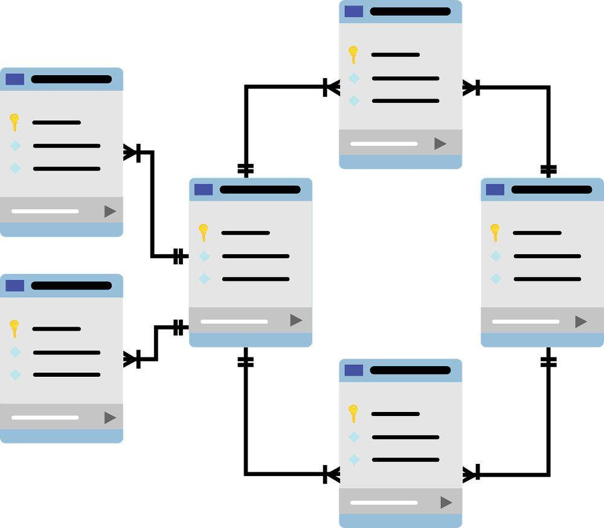

Projektowanie relacyjnej bazy danych na potrzeby firmy.
Relacyjna baza danych to opisany i zorganizowany zbiór tabel połączonych relacjami. Ten sposób przechowywania informacji pozwala na uniknięcie redundancji (powtarzania się danych) oraz przeprowadzanie analiz na podstawie wielu tabel. Każda tabela składa się z rekordów. Poszczególne rekordy składają się z pól, przechowujących jedną daną.
W modelu relacyjnym danych występują następujące rodzaje więzów integralności:
- Integralność encji — każdy schemat relacji posiada klucz główny i żaden element klucza głównego nie może posiadać wartości pustej (NULL).
- Integralność referencyjna — każda wartość klucza obcego jest równa wartości klucza właściwego określonej krotki w relacji nadrzędnej lub wynosi NULL.
- Więzy ogólne — dodatkowe warunki dotyczące poprawności danych określane przez użytkowników lub administratorów baz danych.
Korzyści płynące z używania modelu relacyjnego baz danych:
- efektywność przechowywania danych
- pewność integralności danych
- możliwość rozbudowy bazy danych
- możliwość łatwej zmiany w strukturze bazy danych
- zwiększenie szybkości dostępu do danych
